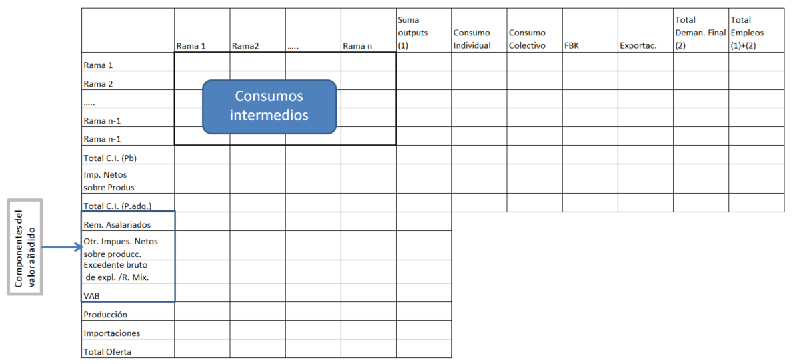
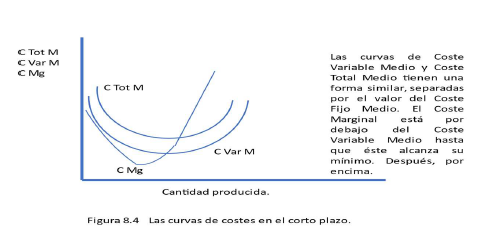

11. Introducción#
En este apartado se procede a mostrar resúmenes de los temas de economía que aparecen en la convocatoria de oposiciones para DEE del INE
11.1. Tema 4. Tablas I.O.#
Las tablas I-O simétricas, se derivan de la tablas de origen y destino y otras fuentes. Sirven para detectar laguna e incoherencias en las fuentes de datos, y dan cobertura a un amplia variedad de trabajos estadísticos.
Las tablas de origen y destino se elaboran a precios corrientes y aprecios del año anterior.
Tabla de origen: muestra la oferta de vienes y servicios por producto y rama de actividad:
Tabla destino: muestra los empleos de bienes y servicios desglosados por producto y por tipo de destino.
En la tabla de origen, los flujos de bienes y servicios se valoran aprecios básicos y en la tabla de destino se valoran a precios de adquisición.
El esquema general de una tabla Input output es el siguiente:

11.2. Tema 7. La economía#
Dos grandes escuelas del pensamiento: clásica y keynesiana
La teoría económica se basa en el comportamiento de los agentes económicos
La actividad económica incluye la producción, comercialización y distribución de bienes y servicios.
Sistemas económicos:
1.- Libre mercado
2.- Planificación
Microeconomía : trata de las decisiones y la actividad de las familias y las empresas.
Macroeconomía: decisiones económicas de agregados territoriales, habitualmente estados o entidades de las que se disponga de suficientes datos para su análisis.
Los agentes económicos deben elegir en primera instancia entre consumo u ocio
Se supone que el único objetivo de las empresas es maximizar el beneficio.
Las tres grandes variables macroeconómicas : producción, empleo e inflación.
Tasa de actividad: Conjunto de personas de una economía que o está trabajando o disponible para trabajar, aunque no encuentra empleo
Tasa de desempleo es la ratio entre el número de desempleados y la población activa
Para medir la inflación, en España se utilizan datos de la encuesta de Presupuestos Familiares
11.2.1. El flujo circular de la renta#
11.2.2. Frontera de posibilidades de producción.#
La Frontera de Posibilidades de Producción representa lo máximo que se puede producir de ambos bienes con los factores disponibles
La frontera muestra también lo que la sociedad en conjunto tiene que sacrificar de un bien si quiere incrementar la producción de otro.
Conforme se utilizan cantidades superiores de un factor, la producción que se añade aumenta también, pero a tasas decrecientes.
11.3. Tema 8. Oferta y demanda.#
las curvas de indiferencia son una manera de representar las preferencias. Son combinaciones de dos bienes, en las cuales las preferencias de las personas son las mismas. Cuanto más alejadas del origen, mayor satisfacción.
Utilidad marginal es lo que aporta una unidad concreta. Es decreciente con el número de unidades del bien consumido. De forma matemática \(UMgX=\frac{\Delta U}{\Delta x}\) y \(UMgY=\frac{\Delta U}{\Delta y}\). Es igual a la pendiente de la curva de indiferencia multiplicado por el incremento o la reducción de la cantidad de la cantidad del bien.
Relación MArginal de Sustitución. indica la tasa que podemos sustituir X por Y o viceversa \(RMS=-\frac{\Delta x}{\Delta y}\)
Restricción presupuestaria y elección óptima.
11.3.1. Tipos de bienes en relación con la renta.#
Normales. La demanda se incrementa o disminuye al igual que lo hace la renta
Inferiores.
De primera necesidad. El incremento de la demanda es inferior al incremento de la renta.
De lujo. Su demanda se incrementa más de lo que crece la renta.
11.3.2. Tipos de bienes en relación con los precios.#
Bienes ordinarios. Si el precio sube la demanda decrece y viceversa.
Bienes de Giffen. Si los precios suben la demanda también y viceversa.
11.3.3. Lo elementos básicos de la oferta#
Las empresas buscan maximizar beneficios. Depende de: Cantidades a vender, precios de venta y costes.
curvas isocuantas. combinación de dos factores para obtener la misma producción.
Isocostes. Lineas en las que el coste de producción utilizando ambos factores es el mismo.
Productividad marginal de la X: \(Pmg\ X=\frac{\partial Q}{\partial X}\)
Relación Técnica de sustitución: \(-\frac{Pmg\ X}{Pmg\ Y}\)
Fórmula de costes: \(\frac{Ctot(q)}{q}=\frac{Cvar(q)}{q}+\frac{CF}{q}\Rightarrow CMT=CMV+CFT\)
El coste marginal: \(Cmg=\frac{\partial Cvar(q)}{\partial q}\). El coste marginal refleja el coste por unidad producida.

11.3.4. Oferta de las empresas.#
Beneficio empresa: \(\pi=p\cdot y-c(y)\). Se maximiza cuando \(p=CMg(Y)\)
La curva de oferta de una empresa es su curva de costes marginales en el tramo en el que son mayores que los costes variables medios.
Equilibrio en el mercado de bienes:
Elasticidad-precio de la demanda: \(\epsilon=\frac{p}{q}\frac{\Delta q}{\Delta p}\)
Elasticidad-renta : \(\epsilon(r)=\frac{r}{q}\frac{\Delta q}{\Delta r}\)
11.3.5. Efecto control de precios#
11.3.6. Efectos de los impuestos#
11.4. Tema 10. Modelo IS-LM#
Este modelo busca la relación entre los tipos de interés y la renta para que tanto el mercado de bienes como el de dinero estén en equilibrio.
11.4.1. Modelo IS.#
Busca la relación entre tipos de renta que deben darse para que el mercado de bienes esté en equilibrio. Las relaciones del mercado de bienes son:
Haciendo DA=Y se tiene la relación IS
La dedución gráfica del modelo es la siguiente:
Despejando i se tiene que la relación IS tiene también esta expresión matemática:
11.4.1.1. Movimientos de la curva IS#
Con variaciones del componente autónomo, la curva IS se desplaza de forma paralela.
Con variaciones del multiplicador varía la pendiente de la curva.
11.4.2. Modelo LM.#
La relación LM representa las combinaciones de tipo de interés y niveles de producción para los que el mercado de dinero está en equilibrio.
El tipo de interés se determina en el mercado monetario a partir del equilibrio entre la oferta real monetaria M/P y la demanda de dinero (demanda de saldos reales, Ld)
Cuando aumenta la demanda de saldos reales (aumenta la demanda de dinero), se produce un exceso de demanda de dinero (mercado de dinero) que genera un exceso de oferta de bonos (mercado de bonos) reduciendo el precio del bono y elevando el tipo de interés de equilibrio.
Cuando disminuye la demanda de saldos reales (disminuye la demanda de dinero), se produce un exceso de oferta monetaria (mercado de dinero) que genera un exceso de demanda de bonos (mercado de bonos) aumentando el precio de los bonos y educiendo el tipo de interés de equilibrio.
La demanda de saldos reales aumenta con el nivel de la renta real y disminuye con el tipo de interés, es decir:
Los parámetros k y h reflejan la sensibilidad de la demanda de saldos reales al nivel de renta y tipos de interés respectivamente.
El equilibrio se produce cuando:
Y despejando el tipo de interés i, obtenemos la relación LM:
La forma de obtención gráfica de la curva LM es la siguiente.
Tanto el mercado de dinero como el de bienes y servicios estarán equilibrado en el punto donde se cortan las dos curvas, es decir en:
\(\alpha_A\) se denomina multiplicador del gasto autónomo.
11.5. Tema 12. Balanza de pagos#
from IPython.display import IFrame
IFrame(src="BalanzaPagos_Esquema.html", width='100%',height='850')